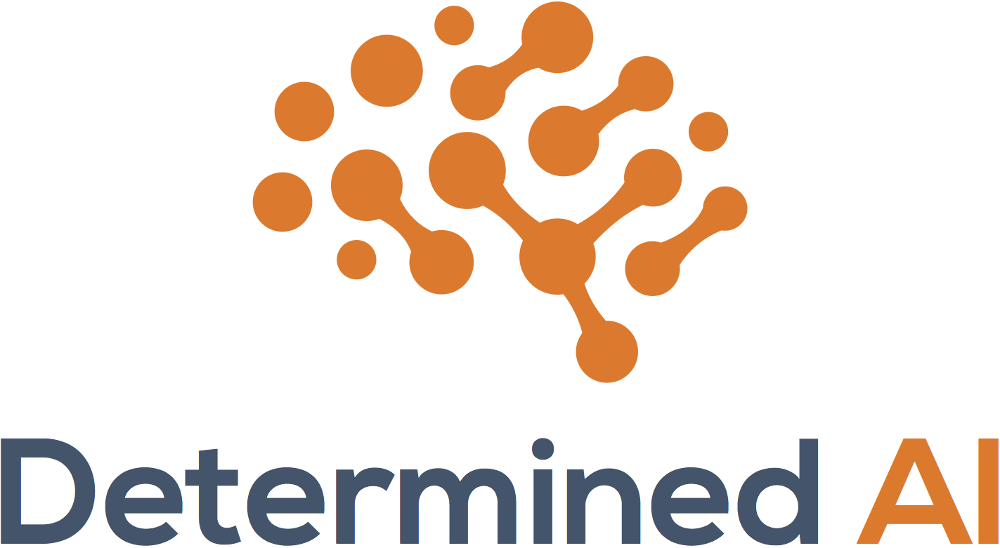

Sponsors
Thank you to our 2018 sponors for your generous support!
Platinum Sponsors

General Sponsors



February 15 & 16, 2018
Stanford, CA
SysML is a new conference targeting research at the intersection of systems and machine learning. The conference aims to elicit new connections amongst these fields, including identifying best practices and design principles for learning systems, as well as developing novel learning methods and theory tailored to practical machine learning workflows.
The inaugural SysML conference will be held on Feb 15th and 16th, 2018, in Stanford, California. The first day will be a closed-door event among the SysML Program Committee to discuss the future of the conference. The second day will be a public event with invited and contributed talks and poster presentations.
Please note our Conference Code of Conduct.
9am - 5pm,
followed by dinner
Program committee only
Stay tuned: We will release conference video recordings shortly.
| 8:00 am - 9:00 am | Breakfast and Registration |
| 9:00 am - 9:15 am | Opening Remarks: Ameet Talwalkar |
| Session I (moderator: Virginia Smith) | |
| 9:15 am - 9:55 am | Invited talk: SysML: Perspectives and Challenges, Michael I. Jordan |
| 9:55 am - 10:05 am | Contributed talk: TVM: End-to-End Compilation Stack for Deep Learning, Tianqi Chen |
| 10:05 am - 10:15 am | Contributed talk: Robust Gradient Descent via Moment Encoding with LDPC Codes, Arya Mazumdar |
| 10:15 am - 10:25 am | Contributed talk: Analog electronic deep networks for fast and efficient inference, Jonathan Binas |
| 10:25 am - 10:50 pm | Coffee Break |
| Session II (moderator: Virginia Smith) | |
| 10:50 am - 11:30 am | Invited talk: Hardware for Deep Learning, Bill Dally |
| 11:30 am - 11:40 am | Contributed talk: YellowFin: Adaptive Optimization for (A)synchronous Systems, Ioannis Mitliagkas |
| 11:40 am - 12:20 am | Invited talk: Security, Privacy, and Democratization: Challenges & Future Directions for ML Systems beyond Scalability, Dawn Song | 12:20 pm - 1:30 pm | Lunch |
| Session III (moderator: Sarah Bird) | |
| 1:30 pm - 2:10 pm | Invited talk: Structured ML: Opportunities and Challenges for the SysML Community, Lise Getoor |
| 2:10 pm - 2:20 pm | Contributed talk: Understanding the Limitations of Current Energy-Efficient Design Approaches for Deep Neural Networks, Vivienne Sze |
| 2:20 am - 2:30 am | Contributed talk: Towards High-Performance Prediction Serving Systems, Matteo Interlandi |
| 2:30 pm - 2:55 pm | Coffee Break |
| Session IV (moderator: Sarah Bird) | |
| 2:55 pm - 3:05 pm | Contributed talk: "I Like the Way You Think!" - Inspecting the Internal Logic of Recurrent Neural Networks, Thibault Sellam |
| 3:05 pm - 3:45 pm | Invited talk: Systems and Machine Learning Symbiosis, Jeff Dean |
| 3:45 pm - 4:00 pm | Closing Remarks: Matei Zaharia |
| 4:30 pm - 6:00 pm | Poster Session I |
| 6:00 pm - 7:30 pm | Poster Session II |
Conference Location: Paul Brest Hall
Poster Session Location: Tresidder Union
Stanford University
The closest parking lot is Wilbur Field Garage (Parking Structure 6).
Jennifer Chayes
Bill Dally
Jeff Dean
Michael I. Jordan
Yann LeCun
Fei-Fei Li
Alex Smola
Dawn Song
Eric Xing
Peter Bailis
Sarah Bird
Dimitris Papailiopoulos (Program Co-Chair)
Chris Ré
Ben Recht
Virginia Smith
Ameet Talwalkar (Program Chair)
Matei Zaharia
David Andersen, Bryan Catanzaro, Eric Chung, Christopher De Sa, Inderjit Dhillon, Alex Dimakis, Charles Elkan, Greg Ganger, Lise Getoor, Phillip Gibbons, Garth Gibson, Joseph Gonzalez, Furong Huang, Kevin Jamieson, Yangqing Jia, Rania Khalaf, Jason Knight, Tim Kraska, Aparna Lakshmiratan, Samuel Madden, Brendan McMahan, Ioannis Mitliagkas, Rajat Monga, Derek Murray, Kunle Olukotun, Theodoros Rekatsinas, Afshin Rostamizadeh, Siddhartha Sen, Evan Sparks, Ion Stoica, Shivaram Venkataraman, Rashmi Vinayak, Markus Weimer, Ce Zhang
Authors are encouraged to submit ongoing or recent research at the intersection of systems and machine learning. The SysML Program Committee will consider all submitted papers and will decide which papers are to be presented at the conference as oral or poster presentations.
We are interested in areas including, but not limited to, the following topics:
Note: This year, accepted submissions will be considered non-archival and can be submitted elsewhere without modification. Moreover, submissions to SysML based on recently published work are also acceptable (though authors should explicitly make note of this in their submissions). After the inaugural conference, SysML will transition to a full conference with long-form paper submissions and proceedings, to run in early 2019.
Submit papers via CMT: https://cmt3.research.microsoft.com/SYSML2018
Submission format: Submitted abstracts should be up to 2 pages long (not including references). Submissions are not blind: author names and affiliations should appear on the first page. Papers should be formatted using the 2017 ACM Master Article Template. For LaTeX users, choose `format=sigconf`. This is the typical, two-column proceedings-style template. Authors do not need to include terms, keywords, or other front matter in their submissions.
Submission deadline: January 5th, 2018 at 11:59pm PST.
Notification of acceptance: January 12th, 2018. January 16th, 2018.
Tweet
Thank you to our 2018 sponors for your generous support!
Platinum Sponsors
General Sponsors
Note to authors: All posters should be 3 feet wide x 4 feet tall max.
| 1-1 | A SIMD-MIMD Acceleration with Access-Execute Decoupling for Generative Adversarial Networks | Amir Yazdanbakhsh, Kambiz Samadi, Hadi Esmaeilzadeh, Nam Sung Kim |
| 1-2 | Slice Finder: Automated Data Slicing for Model Interpretability | Yeounoh Chung, Tim Kraska, Steven Euijong Whang, Neoklis Polyzotis |
| 1-3 | Data Infrastructure for Machine Learning | Eric Breck, Neoklis Polyzotis, Sudip Roy, Steven Euijong Whang, Martin Zinkevich |
| 1-4 | Speeding up ImageNet Training on Supercomputers | Yang You, Zhao Zhang, Cho-Jui Hsieh, James Demmel, Kurt Keutzer |
| 1-5 | Aloha: A Machine Learning Framework for Engineers | Ryan M Deak, Jonathan H Morra |
| 1-6 | Parameter Hub: High Performance Parameter Servers for Efficient Distributed Deep Neural Network Training | Liang Luo, Jacob Nelson, Luis Ceze, Amar Phanishayee, Arvind Krishnamurthy |
| 1-7 | Stitch-X: An Accelerator Architecture for Exploiting Unstructured Sparsity in Deep Neural Networks | Ching-En Lee, Yakun Sophia Shao, Jie-Fang Zhang, Angshuman Parashar, Joel Emer, Stephen W. Keckler, Zhengya Zhang |
| 1-8 | DeepVizdom: Deep Interactive Data Exploration | Carsten Binnig, Kristian Kersting, Alejandro Molina, Emanuel Zgraggen |
| 1-9 | Massively Parallel Video Networks | João Carreira, Viorica Pătrăucean, Andrew Zisserman, Simon Osindero |
| 1-10 | EVA: An Efficient System for Exploratory Video Analysis | Ziqiang Feng, Junjue Wang, Jan Harkes, Padmanabhan Pillai, Mahadev Satyanarayanan |
| 1-11 | Declarative Metadata Management: A Missing Piece in End-To-End Machine Learning | Sebastian Schelter, Joos-Hendrik Böse, Johannes Kirschnick, Thoralf Klein, Stephan Seufert |
| 1-12 | Runway: machine learning model experiment management tool | Jason Tsay, Todd Mummert, Norman Bobroff, Alan Braz, Peter Westerink, Martin Hirzel |
| 1-13 | STRADS-AP: Simplifying Distributed Machine Learning Programming | Jin Kyu Kim, Garth A. Gibson, Eric P. Xing |
| 1-14 | A Deeper Look at FFT and Winograd Convolutions | Aleksandar Zlateski, Zhen Jia, Kai Li, Fredo Durand |
| 1-15 | Efficient Deep Learning Inference on Edge Devices | Ziheng Jiang, Tianqi Chen, Mu Li |
| 1-16 | On Human Intellect and Machine Failures: Troubleshooting Integrative Machine Learning Systems | Besmira Nushi, Ece Kamar, Eric Horvitz, Donald Kossmann |
| 1-17 | DeepThin: A Self-Compressing Library for Deep Neural Networks | Matthew Sotoudeh, Sara S. Baghsorkhi |
| 1-18 | MAERI: Enabling Flexible Dataflow Mapping over DNN Accelerators via Programmable Interconnects | Hyoukjun Kwon, Ananda Samajdar, Tushar Krishna |
| 1-19 | On Machine Learning and Programming Languages | Mike Innes, Stefan Karpinski, Viral Shah, David Barber, Pontus Stenetorp, Tim Besard, James Bradbury, Valentin Churavy, Simon Danisch, Alan Edelman, Jon Malmaud, Jarrett Revels, Deniz Yuret |
| 1-20 | "I Like the Way You Think!" - Inspecting the Internal Logic of Recurrent Neural Networks | Thibault Sellam, Kevin Lin, Ian Yiran Huang, Carl Vondrick, Eugene Wu |
| 1-21 | Automatic Differentiation in Myia | Olivier Breuleux, Bart van Merriënboer |
| 1-22 | TFX Frontend: A Graphical User Interface for a Production-Scale Machine Learning Platform | Peter Brandt, Josh Cai, Tommie Gannert, Pushkar Joshi, Rohan Khot, Chiu Yuen Koo, Chenkai Kuang, Sammy Leong, Clemens Mewald, Neoklis Polyzotis, Herve Quiroz, Sudip Roy, Po-Feng Yang, James Wexler, Steven Euijong Whang |
| 1-23 | Learned Index Structures | Tim Kraska, Alex Beutel, Ed H. Chi, Jeffrey Dean, Neoklis Polyzotis |
| 1-24 | Towards Optimal Winograd Convolution on Manycores | Zhen Jia, Aleksandar Zlateski, Fredo Durand, Kai Li |
| 1-25 | Mobile Machine Learning Hardware at ARM: A Systems-on-Chip (SoC) Perspective | Yuhao Zhu, Matthew Mattina, Paul Whatmough |
| 1-26 | Deep Learning with Apache SystemML | Niketan Pansare, Michael Dusenberry, Nakul Jindal, Matthias Boehm, Berthold Reinwald, Prithviraj Sen |
| 1-27 | Scalable Language Modeling: WikiText-103 on a Single GPU in 12 hours | Stephen Merity, Nitish Shirish Keskar, James Bradbury, Richard Socher |
| 1-28 | PipeDream: Pipeline Parallelism for DNN Training | Aaron Harlap, Deepak Narayanan, Amar Phanishayee, Vivek Seshadri, Gregory R. Ganger, Phillip B. Gibbons |
| 1-29 | Efficient Mergeable Quantile Sketches using Moments | Edward Gan, Jialin Ding, Peter Bailis |
| 1-30 | Systems Optimizations for Learning Certifiably Optimal Rule Lists | Nicholas Larus-Stone, Elaine Angelino, Daniel Alabi, Margo Seltzer, Vassilios Kaxiras, Aditya Saligrama, Cynthia Rudin |
| 1-31 | Accelerating Model Search with Model Batching | Deepak Narayanan, Keshav Santhanam, Matei Zaharia |
| 1-32 | Programming Language Support for Natural Language Interaction | Alex Renda, Harrison Goldstein, Sarah Bird, Chris Quirk, Adrian Sampson |
| 1-33 | Factorized Deep Retrieval and Distributed TensorFlow Serving | Xinyang Yi, Yi-Fan Chen, Sukriti Ramesh, Vinu Rajashekhar, Lichan Hong, Noah Fiedel, Nandini Seshadri, Lukasz Heldt, Xiang Wu, Ed H. Chi |
| 1-34 | Relaxed Pruning: Memory-Efficient LSTM Inference Engine by Limiting the Synaptic Connection Patterns | Jaeha Kung, Junki Park, Jae-Joon Kim |
| 1-35 | Deploying Deep Ranking Models for Search Verticals | Rohan Ramanath, Gungor Polatkan, Liqin Xu, Harold Lee, Bo Hu, Shan Zhou |
| 1-36 | Understanding the Error Structure as a Key to Regularize Convolutional Neural Networks | Bilal Alsallakh, Amin Jourabloo, Mao Ye, Xiaoming Liu, Liu Ren |
| 1-37 | On Scale-out Deep Learning Training for Cloud and HPC | Srinivas Sridharan, Karthikeyan Vaidyanathan, Dhiraj Kalamkar, Dipankar Das, Mikhail E. Smorkalov, Mikhail Shiryaev, Dheevatsa Mudigere, Naveen Mellempudi, Sasikanth Avancha, Bharat Kaul, Pradeep Dubey |
| 1-38 | In-network Neural Networks | Giuseppe Siracusano, Roberto Bifulco |
| 1-39 | Compressing Deep Neural Networks with Probabilistic Data Structures | Brandon Reagen, Udit Gupta, Robert Adolf, Michael M. Mitzenmacher, Alexander M. Rush, Gu-Yeon Wei, David Brooks |
| 1-40 | Greenhouse: A Zero-Positive Machine Learning System for Time-Series Anomaly Detection | Tae Jun Lee, Justin Gottschlich, Nesime Tatbul, Eric Metcalf, Stan Zdonik |
| 1-41 | Precision and Recall for Range-Based Anomaly Detection | Tae Jun Lee, Justin Gottschlich, Nesime Tatbul, Eric Metcalf, Stan Zdonik |
| 1-42 | Whetstone: An accessible, platform-independent method for training spiking deep neural networks for neuromorphic processors | William M. Severa, Craig M. Vineyard, Ryan Dellana, James B. Aimone |
| 1-43 | SparseCore: An Accelerator for Structurally Sparse CNNs | Sharad Chole, Ramteja Tadishetti, Sree Reddy |
| 1-44 | SGD on Random Mixtures: Private Machine Learning under Data Breach Threats | Kangwook Lee, Kyungmin Lee, Hoon Kim, Changho Suh, Kannan Ramchandran |
| 1-45 | Towards High-Performance Prediction Serving Systems | Yunseong Lee, Alberto Scolari, Matteo Interlandi, Markus Weimer, Byung-Gon Chun |
| 1-46 | Breaking the Nonsmooth Barrier: A Scalable Parallel Method for Composite Optimization | Fabian Pedregosa, Rémi Leblond, Simon Lacoste–Julien |
| 1-47 | Corpus Conversion Service: A machine learning platform to ingest documents at scale. | Peter W J Staar, Michele Dolfi, Christoph Auer, Costas Bekas |
| 1-48 | Representation Learning for Resource Usage Prediction | Florian Schmidt, Mathias Niepert, Felipe Huici |
| 1-49 | TVM: End-to-End Compilation Stack for Deep Learning | Tianqi Chen, Thierry Moreau, Ziheng Jiang, Haichen Shen, Eddie Yan, Leyuan Wang, Yuwei Hu, Luis Ceze, Carlos Guestrin, Arvind Krishnamurthy |
| 1-50 | vectorflow: a minimalist neural-network library | Benoît Rostykus, Yves Raimond |
| 1-51 | Learning Heterogeneous Cloud Storage Configuration for Data Analytics | Ana Klimovic, Heiner Litz, Christos Kozyrakis |
| 1-52 | Salus: Fine-Grained GPU Sharing Among CNN Applications | Peifeng Yu, Mosharaf Chowdhury |
| 1-53 | OpenCL Acceleration for TensorFlow | Mehdi Goli, Luke Iwanski, John Lawson, Uwe Dolinsky, Andrew Richards |
| 1-54 | Picking Interesting Frames in Streaming Video | Christopher Canel, Thomas Kim, Giulio Zhou, Conglong Li, Hyeontaek Lim, David G. Andersen, Michael Kaminsky, Subramanya R. Dulloor |
| 1-55 | SLAQ: Quality-Driven Scheduling for Distributed Machine Learning | Haoyu Zhang, Logan Stafman, Andrew Or, Michael J. Freedman |
| 1-56 | A Comparison of Bottom-Up Approaches to Grounding for Templated Markov Random Fields | Eriq Augustine, Lise Getoor |
| 1-57 | Growing Cache Friendly Decision Trees | Niloy Gupta, Adam Johnston |
| 1-58 | Parallelizing Hyperband for Large-Scale Tuning | Lisha Li, Kevin Jamieson, Afshin Rostamizadeh, Ameet Talwalkar |
| 1-59 | Towards Interactive Curation and Automatic Tuning of ML Pipelines | Carsten Binnig, Benedetto Buratti, Yeounoh Chung, Cyrus Cousins, Dylan Ebert, Tim Kraska, Zeyuan Shang, Isabella Tromba, Eli Upfal, Linnan Wang, Robert Zeleznik, Emanuel Zgraggen |
| 2-1 | Ternary Residual Networks | Abhisek Kundu, Kunal Banerjee, Naveen Mellempudi, Dheevatsa Mudigere, Dipankar Das, Bharat Kaul, Pradeep Dubey |
| 2-2 | Neural Architect: A Multi-objective Neural Architecture Search with Performance Prediction | Yanqi Zhou, Gregory Diamos |
| 2-3 | Federated Kernelized Multi-Task Learning | Sebastian Caldas, Virginia Smith, Ameet Talwalkar |
| 2-4 | Materialization Trade-offs for Feature Transfer from Deep CNNs for Multimodal Data Analytics | Supun Nakandala, Arun Kumar |
| 2-5 | Scaling HDBSCAN Clustering with kNN Graph Approximation | Jacob Jackson, Aurick Qiao, Eric P. Xing |
| 2-6 | BlazeIt: An Optimizing Query Engine for Video at Scale | Daniel Kang, Peter Bailis, Matei Zaharia |
| 2-7 | Time Travel based Feature Generation | Kedar Sadekar, Hua Jiang |
| 2-8 | Controlling AI Engines in Dynamic Environments | Nikita Mishra, Connor Imes, Henry Hoffmann, John D. Lafferty |
| 2-9 | Intermittent Deep Neural Network Inference | Graham Gobieski, Nathan Beckmann, Brandon Lucia |
| 2-10 | CascadeCNN: Pushing the performance limits of quantisation | Alexandros Kouris, Stylianos I. Venieris, Christos-Savvas Bouganis |
| 2-11 | Making Machine Learning Easy with Embeddings | Dan Shiebler, Abhishek Tayal |
| 2-12 | CrossBow: Scaling Deep Learning on Multi-GPU Servers | Alexandros Koliousis, Pijika Watcharapichat, Matthias Weidlich, Paolo Costa, Peter Pietzuch |
| 2-13 | Better Caching with Machine Learned Advice | Thodoris Lykouris, Sergei Vassilvitskii |
| 2-14 | Large Model Support for Deep Learning in Caffe and Chainer | Minsik Cho, Tung D. Le, Ulrich A. Finkler, Haruiki Imai, Yasushi Negishi, Taro Sekiyama, Saritha Vinod, Vladimir Zolotov, Kiyokuni Kawachiya, David S. Kung, Hillery C. Hunter |
| 2-15 | Learning Graph-based Cluster Scheduling Algorithms | Hongzi Mao, Malte Schwarzkopf, Shaileshh Bojja Venkatakrishnan, Mohammad Alizadeh |
| 2-16 | Intel nGraph: An Intermediate Representation, Compiler, and Executor for Deep Learning | Scott Cyphers, Arjun K. Bansal, Anahita Bhiwandiwalla, Jayaram Bobba, Matthew Brookhart, Avijit Chakraborty, Will Constable, Christian Convey, Leona Cook, Omar Kanawi, Robert Kimball, Jason Knight, Nikolay Korovaiko, Varun Kumar, Yixing Lao, Christopher R. Lishka, Jaikrishnan Menon, Jennifer Myers, Sandeep Aswath Narayana, Adam Procter, Tristan J. Webb |
| 2-17 | Efficient Multi-Tenant Inference on Video using Microclassifiers | Giulio Zhou, Thomas Kim, Christopher Canel, Conglong Li, Hyeontaek Lim, David G. Andersen, Michael Kaminsky, Subramanya R. Dulloor |
| 2-18 | Abstractions for Containerized Machine Learning Workloads in the Cloud | Balaji Subramaniam, Niklas Nielsen, Connor Doyle, Ajay Deshpande, Jason Knight, Scott Leishman |
| 2-19 | Not All Ops Are Created Equal! | Liangzhen Lai, Naveen Suda, Vikas Chandra |
| 2-20 | Robust Gradient Descent via Moment Encoding with LDPC Codes | Raj Kumar Maity, Ankit Singh Rawat, Arya Mazumdar |
| 2-21 | Buzzsaw: A System for High Speed Feature Engineering | Andrew Stanton, Liangjie Hong, Manju Rajashekhar |
| 2-22 | Predicate Optimization for a Visual Analytics Database | Michael R. Anderson, Michael Cafarella, Thomas F. Wenisch, German Ros |
| 2-23 | Understanding the Limitations of Current Energy-Efficient Design Approaches for Deep Neural Networks | Yu-Hsin Chen, Tien-Ju Yang, Joel Emer, Vivienne Sze |
| 2-24 | Compiling machine learning programs via high-level tracing | Roy Frostig, Matthew James Johnson, Chris Leary |
| 2-25 | Dynamic Stem-Sharing for Multi-Tenant Video Processing | Angela Jiang, Christopher Canel, Daniel Wong, Michael Kaminsky, Michael A. Kozuch, Padmanabhan Pillai, David G. Andersen, Gregory R. Ganger |
| 2-26 | A Hierarchical Model for Device Placement | Azalia Mirhoseini, Anna Goldie, Hieu Pham, Benoit Steiner, Quoc V. Le, Jeff Dean |
| 2-27 | Blink: A fast NVLink-based collective communication library | Guanhua Wang, Amar Phanishayee, Shivaram Venkataraman, Ion Stoica |
| 2-28 | TOP: A Compiler-Based Framework for Optimizing Machine Learning Algorithms through Generalized Triangle Inequality | Yufei Ding, Lin Ning, Hui Guang, Xipeng Shen, Madanlal Musuvathi, Todd Mytkowicz |
| 2-29 | UberShuffle: Communication-efficient Data Shuffling for SGD via Coding Theory | Jichan Chung, Kangwook Lee, Ramtin Pedarsani, Dimitris Papailiopoulos, Kannan Ramchandran |
| 2-30 | Toward Scalable Verification for Safety-Critical Deep Networks | Lindsey Kuper, Guy Katz, Justin Gottschlich, Kyle Julian, Clark Barrett, Mykel J. Kochenderfer |
| 2-31 | DAWNBench: An End-to-End Deep Learning Benchmark and Competition | Cody Coleman, Deepak Narayanan, Daniel Kang, Tian Zhao, Jian Zhang, Luigi Nardi, Peter Bailis, Kunle Olukotun, Chris Ré, Matei Zaharia |
| 2-32 | Learning Network Size While Training with ShrinkNets | Guillaume Leclerc, Raul Castro Fernandez, Samuel Madden |
| 2-33 | Have a Larger Cake and Eat It Faster Too: A Guideline to Train Larger Models Faster | Newsha Ardalani, Joel Hestness, Gregory Diamos |
| 2-34 | Retrieval as a defense mechanism against adversarial examples in convolutional neural networks | Junbo Zhao, Jinyang Li, Kyunghyun Cho |
| 2-35 | DNN-Train: Benchmarking and Analyzing Deep Neural Network Training | Hongyu Zhu, Bojian Zheng, Bianca Schroeder, Gennady Pekhimenko, Amar Phanishayee |
| 2-36 | High Accuracy SGD Using Low-Precision Arithmetic and Variance Reduction (for Linear Models) | Alana Marzoev, Christopher De Sa |
| 2-37 | SkipNet: Learning Dynamic Routing in Convolutional Networks | Xin Wang, Fisher Yu, Zi-Yi Dou, Joseph E. Gonzalez |
| 2-38 | Memory-Efficient Data Structures for Learning and Prediction | Damian Eads, Paul Baines, Joshua S. Bloom |
| 2-39 | Efficient and Programmable Machine Learning on Distributed Shared Memory via Static Analysis | Jinliang Wei, Garth A. Gibson, Eric P. Xing |
| 2-40 | Parle: parallelizing stochastic gradient descent | Pratik Chaudhari, Carlo Baldassi, Riccardo Zecchina, Stefano Soatto, Ameet Talwalkar, Adam Oberman |
| 2-41 | Optimal Message Scheduling for Aggregation | Leyuan Wang, Mu Li, Edo Liberty, Alex J. Smola |
| 2-42 | Analog electronic deep networks for fast and efficient inference | Jonathan Binas, Daniel Neil, Giacomo Indiveri, Shih-Chii Liu, Michael Pfeiffer |
| 2-43 | Network Evolution for DNNs | Michael Alan Chang, Aurojit Panda, Domenic Bottini, Lisa Jian, Pranay Kumar, Scott Shenker |
| 2-44 | BinaryCmd: Keyword Spotting with deterministic binary basis | Javier Fernández-Marqués, Vincent W.-S. Tseng, Sourav Bhattachara, Nicholas D. Lane |
| 2-45 | YellowFin: Adaptive Optimization for (A)synchronous Systems | Jian Zhang, Ioannis Mitliagkas |
| 2-46 | GPU-acceleration for Large-scale Tree Boosting | Huan Zhang, Si Si, Cho-Jui Hsieh |
| 2-47 | Treelite: toolbox for decision tree deployment | Hyunsu Cho, Mu Li |
| 2-48 | On Importance of Execution Ordering in Graph-Based Distributed Machine Learning Systems | Sayed Hadi Hashemi, Sangeetha Abdu Jyothi, Roy Campbell |
| 2-49 | Draco: Robust Distributed Training against Adversaries | Lingjiao Chen, Hongyi Wang, Dimitris Papailiopoulos |
| 2-50 | Clustering System Data using Aggregate Measures | Johnnie C-N. Chang, Robert H-J. Chen, Jay Pujara, Lise Getoor |
| 2-51 | A Framework for Searching a Predictive Model | Yoshiki Takahashi, Masato Asahara, Kazuyuki Shudo |
| 2-52 | Distributed Placement of Machine Learning Operators for IoT applications spanning Edge and Cloud Resources | Tarek Elgamal, Atul Sandur, Klara Nahrstedt, Gul Agha |
| 2-53 | Finding Heavily-Weighted Features with the Weight-Median Sketch | Kai Sheng Tai, Vatsal Sharan, Peter Bailis, Gregory Valiant |
| 2-54 | Flexible Primitives for Distributed Deep Learning in Ray | Yaroslav Bulatov, Robert Nishihara, Philipp Moritz, Melih Elibol, Ion Stoica, Michael I. Jordan |
| 2-55 | BLAS-on-flash: an alternative for training large ML models? | Suhas Jayaram Subramanya, Srajan Garg, Harsha Vardhan Simhadri |
| 2-56 | Treating Machine Learning Algorithms As Declaratively Specified Circuits | Jason Eisner, Nathaniel Wesley Filardo |
| 2-57 | Tasvir: Distributed Shared Memory for Machine Learning | Amin Tootoonchian, Aurojit Panda, Aida Nematzadeh, Scott Shenker |
All attendees, speakers, sponsors and volunteers at our conference are required to agree with the following code of conduct. Organisers will enforce this code throughout the event. We expect cooperation from all participants to help ensure a safe environment for everybody.
Our conference is dedicated to providing a harassment-free conference experience for everyone, regardless of gender, gender identity and expression, age, sexual orientation, disability, physical appearance, body size, race, ethnicity, religion (or lack thereof), or technology choices. We do not tolerate harassment of conference participants in any form. Sexual language and imagery is not appropriate for any conference venue, including talks, workshops, parties, Twitter and other online media. Conference participants violating these rules may be sanctioned or expelled from the conference without a refund at the discretion of the conference organizers.
For more information, visit: http://confcodeofconduct.com/